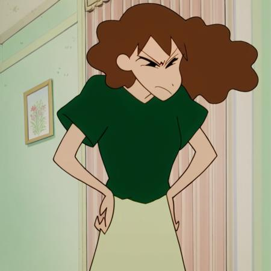

Main Characters
Misae
Misae Nohara (野原 みさえ, Nohara Misae) is Shinnosuke's mother. She is a housewife who often struggles to manage her family and deal with Shinnosuke's antics.
- Shin-chan
- Shinnosuke Nohara (野原 しんのすけ, Nohara Shinnosuke), commonly known as Shin-chan (しんちゃん), is the main character of the series. He is a 5-year-old
- Himawari
- Himawari Nohara (野原 ひまわり, Nohara Himawari) is the younger sister of Shinnosuke. She is a baby who loves shiny things and has a strong personality.
- Kazama
- Kazama Toru (風間 トオル, Kazama Tōru) is one of Shinnosuke's friends. He is known for being smart and often tries to act mature.
- Nene
- Nene Nene (ねねちゃん, Nene-chan) is Shinnosuke's friend and is known for her strong personality. She often acts as the voice of reason among the group.
- Masao
- Masao (まさおくん, Masao-kun) is one of Shinnosuke's friends. He is known for being timid and often gets scared easily.